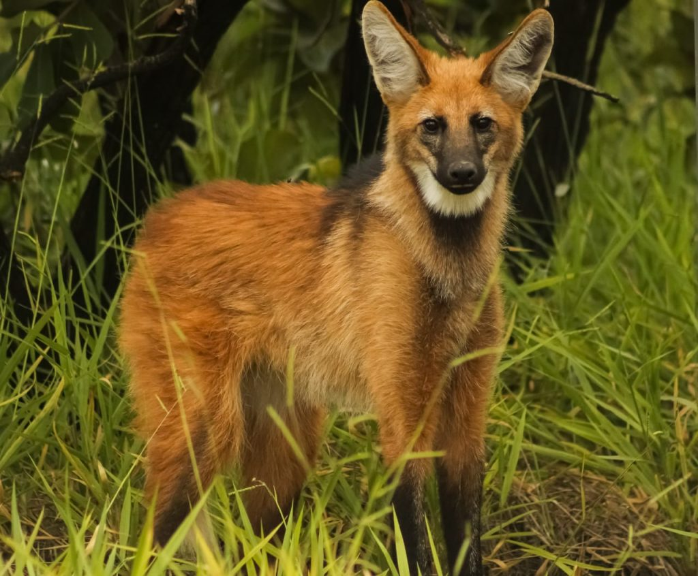
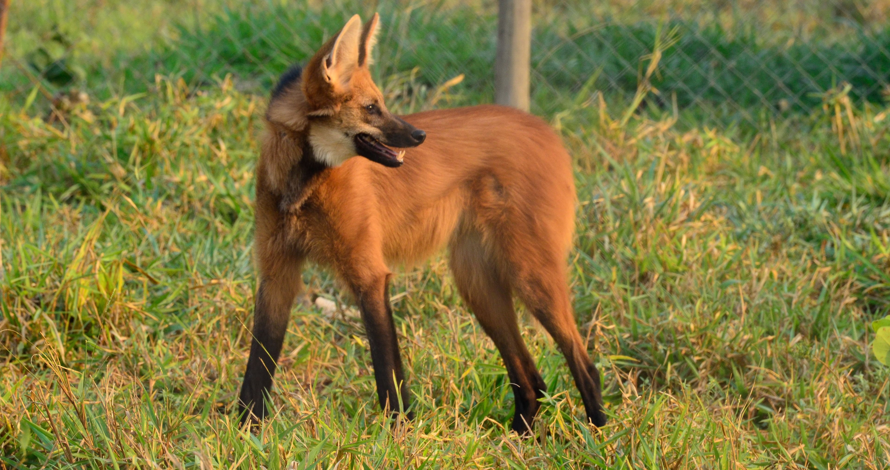
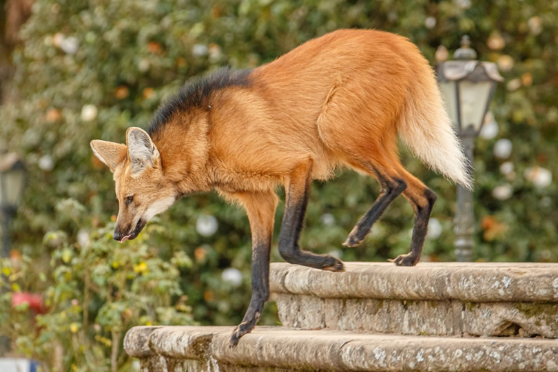
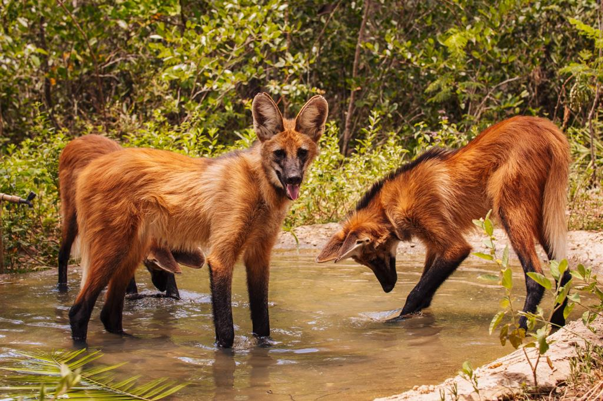
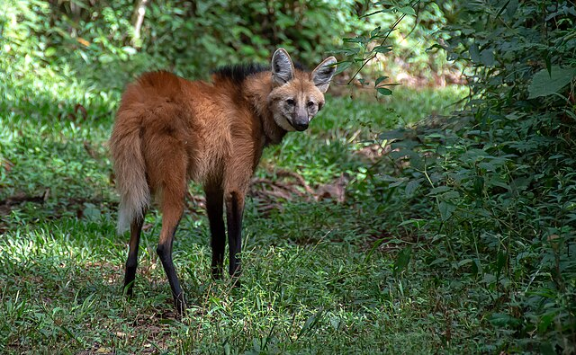
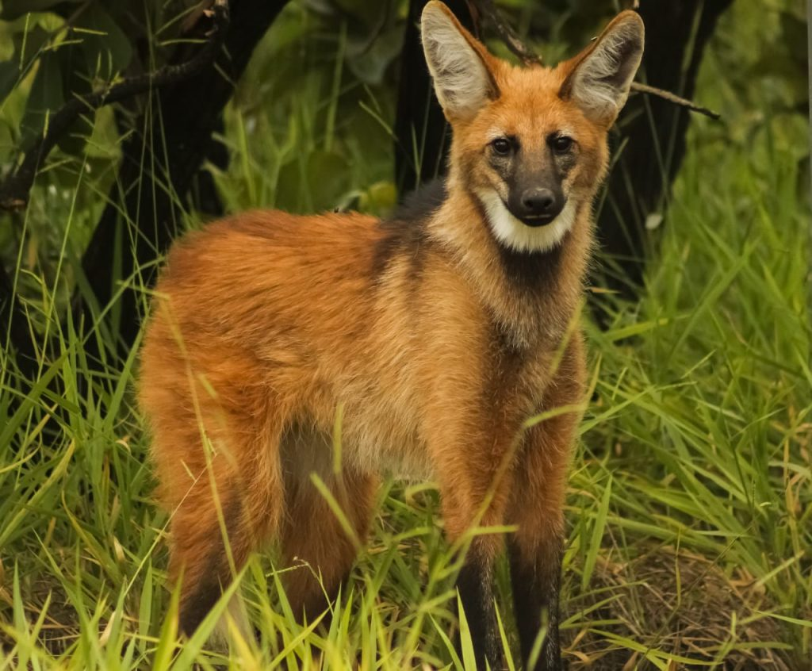
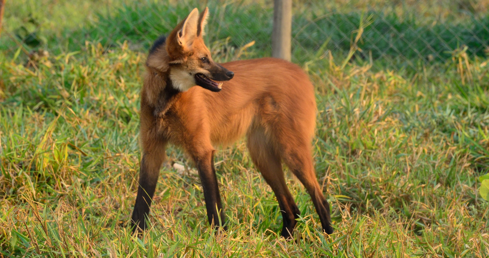
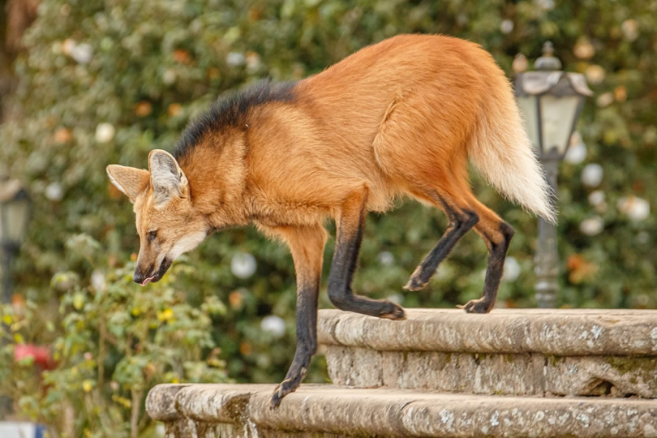
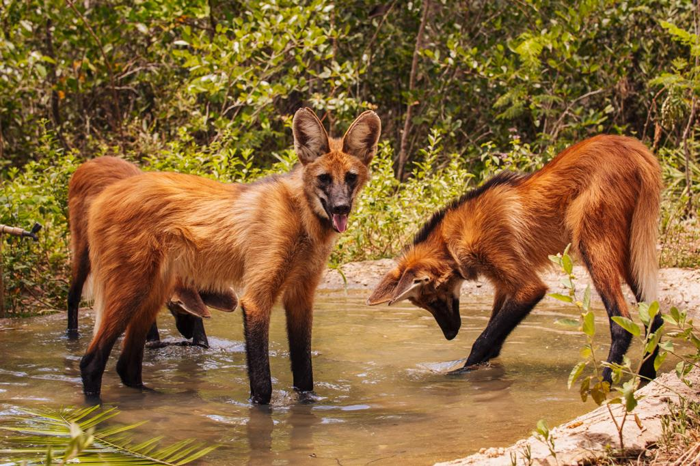
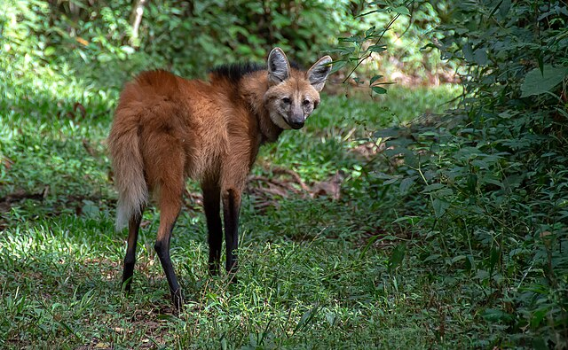

Nome Científico:Chrysocyon brachyurus (Linnaeus, 1766)
Nomes Populares: Conhecido também como "lobo-guará" e "lobo-de-pelagem-vermelha"
Classificação Biológica
Domínio: Eukaryota
Reino: Animalia
Filo: Chordata
Classe: Mammalia
Ordem: Carnivora
Família: Canidae
Gênero: Chrysocyon
Espécie: C. brachyurus
Nutrição Geral e Hábitos Alimentares
Tipo de Nutrição: Heterotrófico
O lobo-guará é um onívoro com uma dieta variada que inclui frutos, insetos, pequenos vertebrados e plantas. Sua dieta é adaptada às estações do ano e à disponibilidade de alimentos no seu habitat.
Morfologia
Pelagem e Corpo A pelagem do lobo-guará é predominantemente vermelha com patas e crina negra. O corpo é esbelto e alongado, com uma cauda longa e peluda. Possui uma cabeça estreita e orelhas grandes e eretas. Órgãos Respiratórios O aparelho respiratório do lobo-guará inclui narinas, fossas nasais, cavidade nasal, seios paranasais, faringe, laringe, traqueia e pulmões. Os pulmões são adaptados para a vida em ambientes variados, desde cerrados até florestas. Patas As patas são longas e finas, adaptadas para correr longas distâncias e atravessar terrenos variados.
Comportamento
O lobo-guará é um animal solitário e noturno. Ele é conhecido por sua habilidade de percorrer grandes distâncias em busca de alimento. É um animal territorial e pode marcar seu território com urina e fezes. O lobo-guará é também um bom corredor e tem adaptado seu comportamento para se proteger de predadores e caçar presas.
Ocorrência
O lobo-guará é encontrado na América do Sul, principalmente em áreas de cerrado, campos e florestas tropicais. Sua distribuição abrange países como Brasil, Argentina, Paraguai e Bolívia. Prefere habitats com vegetação aberta e áreas onde possa encontrar uma dieta variada.
Mapa de Ocorrência
Reprodução
Sistema de Acasalamento: O lobo-guará é monogâmico e forma pares que podem permanecer juntos por vários anos. Reprodução ao Longo do Ano: A reprodução geralmente ocorre durante a estação chuvosa, quando a disponibilidade de alimento é maior. Gestação: A gestação dura cerca de 60 a 65 dias. Ninhadas: As fêmeas geralmente dão à luz de dois a quatro filhotes por ninhada. Os filhotes nascem cegos e dependem da mãe para alimentação e cuidados até estarem mais maduros.
 








